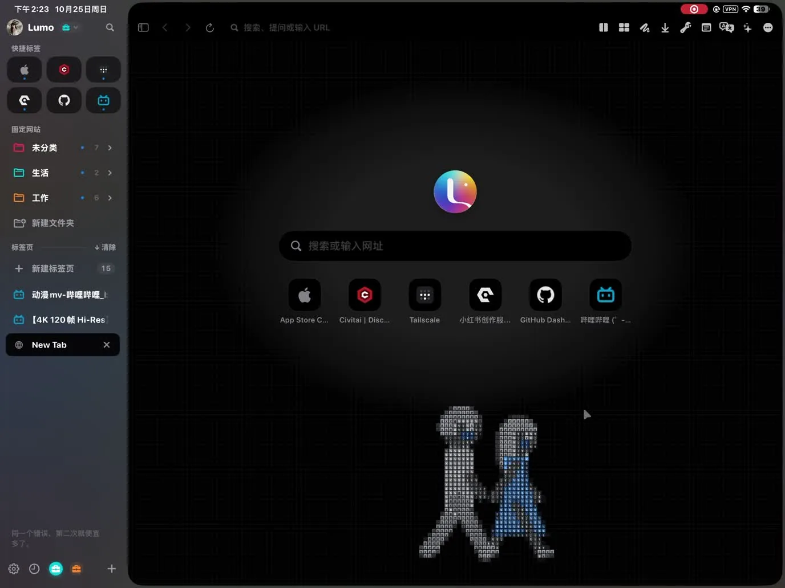
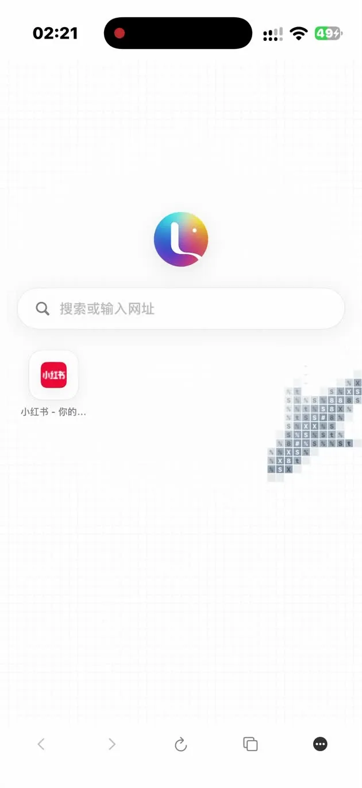

密码，用你习惯的方式。
选择 Lumo 密码或系统密码自动填充。切到系统模式，新网页就不再加载 Lumo 密码脚本。
功能示意，不会读取或保存密码。

此空间拥有自己的登录状态。
example.com
02 / 把顺手的工具带进来
用扩展保存整张网页、发现媒体；用用户脚本调整阅读和操作方式。常用工具，就在地址栏旁边。
6.6 增加本站脚本面板与总开关，也能逐个允许扩展在无痕空间中运行。
查看安装与兼容说明 →接下来，更顺手
把常用的选择交给你，把繁琐的事留给浏览器。
更新预览 · App Store 当前公开版本为 6.5；以下新增功能随 6.6 提供，实际上线以商店为准。
选择 Lumo 密码或系统密码自动填充。切到系统模式，新网页就不再加载 Lumo 密码脚本。
功能示意，不会读取或保存密码。iCloud 按条目合并同步。两台设备同时整理，也能保留彼此的修改，并查看同步空间用量。
创建文件夹与子文件夹，上下拖动排序，或直接把书签移到另一个文件夹。
逐个允许扩展在无痕浏览中运行。安装 Chrome 商店扩展时，先验证包签名。
减少不必要的界面更新，内存紧张时减少常驻网页。ProMotion iPhone 动画最高支持 120Hz。
新增俄语，补齐法语等语言文案。App 支持中文简繁、英文、日文、韩文、德文、西班牙文、法文与俄文。
03 / 给日常一点光
游鱼在字符间穿行，一道光扫过刚打开的页面。起始页的场景、颜色和动效，都可以按你的喜好调整。
6.6 中，冲击波会在页面就绪时出现；加载失败的页面不会播放。
选择你的外观 →日常需要，都在身边
读长文、对照资料、留下笔记，让浏览接着思路走。
发现页面中的图片与视频，把有用的内容带走。
用 Apple Watch 控制滚动、缩放、音量与视频播放。
使用自己的 API Key；相关内容直接发送给你选择的服务。
宽屏上并排打开网页，读资料时少一次来回切换。
广告拦截、单网站设置与无痕空间，按你的需要选择。
一路走来
启用 iCloud、扩展或 AI 时，数据由相应服务处理。使用与授权的选择，都交给你。
属于你的空间，等你来逛。
iOS / iPadOS 18+ · 网页扩展需 18.4+ · 部分功能属于 Lumo Pro